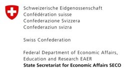
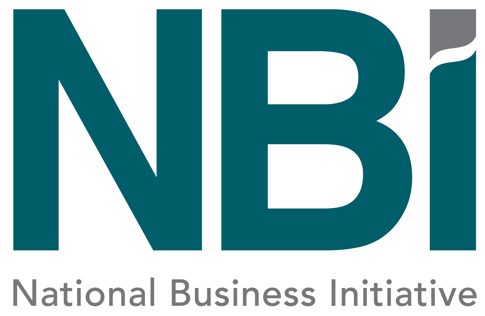

Access to learning opportunities
The National Business Initiative (NBI) has created an online application to improve the learning experience for technical and business-related topics.
Key features of the app include offline access to content; the ability to download and complete content activities with outcomes logged on the learning management system when connected; interactive engagement; self-paced self-learning; the option to register and manage your profile; and tracking of learning progress.
This app is part of the Installation, Repair and Maintenance (IRM) Initiative, which aims to unlock demand for jobs and create opportunities for youth to access those jobs. The Initiative is a collaboration between the NBI, the government and the private sector, offering demand-led skills training, workplace-based learning, and enterprise development with technology integration for a more dynamic learning process.
Access to market opportunities
The IRM Initiative hub is a platform that provides access to various opportunities including procurement, access to market, capacity building, training and enterprise development support.
To gain access to the various opportunities, click the link below, register and complete the application form, which will give you access to various opportunities under the "Opportunities" tab on the hub.
Access to business development support
Our business development support services are designed to help you thrive in today's competitive market. Through our hubs, we assist township-based SMMEs in identifying opportunities, and equipping them with the skills and tools to ensure that they adapt to market trends. We also help them create new networks and partnerships.


Access Your Green Economy Dashboard
Login to track your progress, access personalized funding
opportunities, and connect with the green economy network.